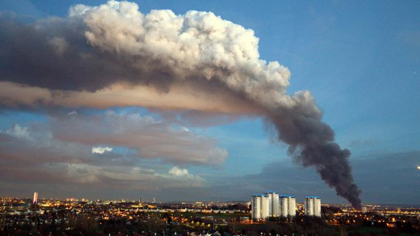

Ensino (Teaching)
Table of Contents
- 1. EAMB-7024 Métodos Numéricos em Engenharia Ambiental
- 2. TEA-010 Matemática Aplicada I
- 3. TEA-013 Matemática Aplicada II
- 4. TEA-018 Hidrologia Ambiental (Em conjunto com EAMB-7039 (Tópicos Especiais) Hidrologia Física)
- 5. TEA-023/EAMB-7003 Dispersão Atmosférica e Qualidade do Ar/Camada-Limite Atmosférica e Modelos de Dispersão Atmosférica
- 6. EAMB-7050 Mecânica da Turbulência
- 7. MNUM7092 Chapel
- 8. TEA-040B Implementação Computacional de Modelos de Evaporação e Evapotranspiração
- 9. EAMB-7039 (Tópicos Especiais) Ferramentas computacionais para redação técnica e científica: LaTeX e Gnuplot
- 10. EAMB-7021 Mecânica dos Fluidos Ambiental Intermediária
- 11. TEA-034 Tópicos Especiais em Engenharia Ambiental: Técnicas de Aprendizagem Acadêmica
- 12. EAMB7023-TEA-752 Métodos Matemáticos em Engenharia Ambiental
- 13. EAMB-7009 Dinâmica espectral da turbulência
This site is searchable. See HELP on the right (you may need to click around a few times until HELP shows up).
1. EAMB-7024 Métodos Numéricos em Engenharia Ambiental
1.1. Ementa
Introdução; Problemas de equilíbrio; Problemas transientes: equações parabólicas e hiperbólicas , condições auxiliares; Classificação e características das equações diferenciais parciais; Equações de diferenças finitas: aproximação por diferenças finitas , discretização espacial e temporal, discretizações multidimensionais, consistência, convergência e estabilidade, formulações de ordem elevada; Técnicas de solução numérica: sistemas lineares, equações elípticas, métodos diretos, métodos iterativos, método de Gauss-Seidel, método de sobre-relaxação, condições de contorno tipo Neummann, equações hiperbólicas, equações de convecção e da onda linear, método de Runge-Kutta; Equações parabólicas; Aplicações em problemas ambientais: modelagem de aquíferos, dispersão em rios, modelos ecológicos. Método de Lattice Boltzmann.
1.2. Programa: eamb7024-prog-2024-2.pdf
1.3. Notas de aula: chplnum.pdf
1.4. Avaliação
2 trabalhos individuais com temas à escolha dos alunos. Os trabalhos deverão ser defendidos (15 minutos) nas datas designadas na programação acima. Além disso, os trabalhos deverão ser entregues por email (mailto:nldias@ufpr.br) no seguinte formato:
- Um arquivo pdf (A4, Times-Roman, margens de 2.5cm) com a descrição teórica do trabalho (problema científico ou de engenharia, método numérico, etc.), resultados com figuras e tabelas, etc.; e a descrição do programa de computador (linguagem utilizada, principais tarefas que o programa realiza, questões computacionais relevantes).
- Um arquivo-fonte com o programa em uma das linguagens que podem ser utilizadas (ver tabela abaixo).
1.4.1. Linguagens que podem ser utilizadas nesta disciplina
| Linguagem | Sistemas Operaconais | Onde encontrar |
|---|---|---|
| Chapel | Linux, MacOs, Windows(?) | https://chapel-lang.org/ |
| Fortran | Linux, MacOs, Windows | https://gcc.gnu.org/wiki/GFortran |
| C | Linux, MacOs, Windows | (Variável: parta de https://gcc.gnu.org/) |
| Pascal | Linux, MacOs, Windows | https://www.freepascal.org/ |
| MatLab (substitua por Octave) | Linux, MacOs, Windows | https://octave.org/ |
| Basic | Linux, MacOs, Windows | https://freebasic.net/ |
2. TEA-010 Matemática Aplicada I
2.1. Ementa
1- Ferramentas computacionais para programação e processamento simbólico. 2- Revisão de programação científica. 3- Vetores, matrizes e coordenadas. 4- Campos escalares e vetoriais. 5- Equações diferenciais de 1a e 2a ordens. 6- Teoria de variáveis complexas: analiticidade, séries,teorema do resíduo e integração de contorno. 7- Soluções em série de equações diferenciais. 8- Transformada de Laplace.
2.2. Sala e Horário
Sala: PM-01
Horário: 07:30–09:10
2.3. Programa: tea010-prog-2024-1.pdf
2.4. Livro-texto
2a edição (versão mais recente com adições e correções; ainda sem ISBN) : matappa-2ed.pdf
2.5. Notas
Veja aqui as notas até a F: notpre2024-1.pdf
2.6. Gabaritos
Faça o download do gabarito da P1: 2024-1-p01-sol.pdf
Faça o download do gabarito da P2: 2024-1-p02-sol.pdf
Faça o download do gabarito da P3: 2024-1-p03-sol.pdf
Faça o download do gabarito da S: 2024-1-s-sol.pdf
Faça o download do gabarito da F: 2024-1-f-sol.pdf
2.7. Arquivos de provas passadas
3. TEA-013 Matemática Aplicada II
3.1. Ementa
1- Ferramentas computacionais e solução numérica com diferenças finitas de equações diferenciais parciais: análise de estabilidade de von Neumman e exemplos escolhidos entre a equação da difusão, equação da onda, equação de Laplace, e outras de uso comum em Engenharia Ambiental. 2- Análise linear, sistemas lineares em Engenharia. 3- Séries e Transformadas de Fourier. Solução de equações diferenciais, análise espectral e análise de periodicidade em séries de dados naturais. 4- Funções de Green e Identidades de Green em Engenharia: Hidrógrafa Unitária Instanânea, Problemas de Dispersão de Poluentes. 5- Teoria de Sturm-Liouville e algumas funções especiais adicionais (Legendre, Laguerre, Hermite). Importância da teoria no método de separação de variáveis para equações diferenciais parciais. 6- Equações Diferenciais Parciais: problemas lineares e não-lineares em escoamentos na atmosfera, nos oceanos, em rios e no solo, e problemas de dispersão de poluentes. 7- Classificação e o método das características: escoamento em canais. Solução por separação de variáveis, transformadas integrais e transformada de Boltzmann.
3.2. Horário
- Aulas: 2as, 4as, 6as, 07:30–09:10
- Local: PM-2
- Atendimento: Por agendamento em minha sala
3.3. Programa: tea013-prog-2024-2.pdf
3.4. Livro-texto: matappa-2ed.pdf
3.5. Notas
3.6. Gabaritos
3.7. Arquivos com as soluções de provas passadas
4. TEA-018 Hidrologia Ambiental (Em conjunto com EAMB-7039 (Tópicos Especiais) Hidrologia Física)

4.1. Ementa
Ciclo hidrológico. Sistemas hidrológicos. Bacia hidrográfica. Balanço de massa. Balanço de quantidade de movimento. Radiação e balanço de energia. Vapor de água. Precipitação. Evaporação e evapotranspiração. Infiltração e escoamento no solo em meios saturados e nãosaturados. Escoamento superficial e propagação de cheias. Sedimentologia. Hidrograma unitário e modelagem chuva vazão. Técnicas de medição. Análise de frequência em hidrologia.
4.2. Programa: tea018-prog-2023-2.pdf
4.3. Notas de aula e links para o youtube:
4.3.1. Notas de aula
- Processamento de dados em Hidrologia: procdad.pdf
- Notas de aula: hidramb.pdf
4.4. Avaliação
Haverá 6 provas parciais (P1, P2, P3, P4, P5, P6). Em cada prova, 60% da nota será a respeito de um trabaho que será postado mas não será recolhido nem corrigido. A média parcial será a média das 4 melhores notas (Q1, Q2, Q3, Q4).
2020-07-29T11:15:00 Baixe aqui o enunciado do 1o Trabalho.
2020-08-13T19:31:47 Baixe aqui o enunciado do 2o Trabalho.
2020-08-20T17:18:59 Baixe aqui o enunciado do 3o Trabalho.
2020-08-20T17:18:59 Baixe aqui o enunciado do 4o Trabalho.
2020-09-11T10:23:34 Baixe aqui o enunciado do 5o Trabalho. A saída do
programa oncin.py está aqui.
2020-09-11T10:58:17 Baixe aqui o enunciado do 6o Trabalho.
Notas até a F: tea018-notpre2023-2.pdf
4.5. Gabaritos
Solução da P1: tea018-2023-2-p01-sol.pdf
Solução da P2: tea018-2023-2-p02-sol.pdf
Solução da P3: tea018-2023-2-p03-sol.pdf
Solução da P4: tea018-2023-2-p04-sol.pdf
Solução da P5: tea018-2023-2-p05-sol.pdf
Solução da P6: tea018-2023-2-p06-sol.pdf
Solução da F: tea018-2023-2-f-sol.pdf
5. TEA-023/EAMB-7003 Dispersão Atmosférica e Qualidade do Ar/Camada-Limite Atmosférica e Modelos de Dispersão Atmosférica

5.1. Ementa
Estudo das propriedades físicas da camada limite atmosférica, dos processos que controlam a dispersão dos poluentes na atmosfera e dos principais métodos e técnicas empregadas na modelagem matemática desses processos.
Balanço de energia na superfície; Balanço de radiação próximo à superfície: leis da radiação , divergência de fluxo de energia; Temperatura do solo e transferência de calor: temperatura na superfície e subsuperfície , teoria de transferência de calor no solo; Temperatura e umidade na camada limite planetária: relações termodinâmicas básicas , estabilidade estática , camadas de mistura e inversões , perfis verticais de temperatura e umidade; distribuição do vento na camada limite planetária; Escoamentos viscosos: escoamentos laminares e turbulentos , equações do movimento , camadas de Ekman , transferência de calor em fluidos; Fundamentos da turbulência atmosférica: instabilidade , características gerais da turbulência , variáveis médias e perturbações , variâncias e fluxos turbulentos; Teorias semi-empíricas da turbulência: descrição matemática dos escoamentos turbulentos , teorias de similaridade; Camadas limite neutras; Teoria da similaridade de Monin-Obukhov; Métodos para determinação dos fluxos de quantidade de movimento e calor; Fatores que controlam a dispersão de poluentes na atmosfera; Elevação de uma pluma de poluentes: elevação em condições neutras e estáveis; Efeito da turbulência ambiente nas plumas; Dispersão na camada limite convectiva: estrutura da camada limite convectiva , características das plumas de dispersão; Dispersão na camada limite estável: modelos de dispersão na camada limite estável.
5.2. Sala de Aula e Horário
3as e 5as, PF-12, 07:30–09:10
5.3. Programa: tea023-FICHA2-2021-2.pdf
5.4. Notas de aula:
Atenção! As notas estão em preparação e devem ser lidas à luz dos comentários feitos em sala. Seu uso por não-alunos da disciplina não é recomendado. Favor não citar como referência, nem redistribuir. Atualizadas em 2022-04-19T10:14:21.
5.6. Provas
Faça o download do gabarito da P1: tea023-2021-2-p01-sol.pdf
Faça o download do gabarito da P2: tea023-2021-2-p02-sol.pdf
Faça o download do gabarito da P3: tea023-2021-2-p03-sol.pdf
Faça o download do gabarito da F: tea023-2021-2-f-sol.pdf
5.7. Notas
Faça o download das notas até a F: tea023-notpre2021-2.pdf
6. EAMB-7050 Mecânica da Turbulência
6.1. Ementa
Revisão das equações de Navier-Stokes e das equações de transporte para temperatura e para um escalar passivo ou ativo; simplificações e soluções analíticas de problemas laminares, incluindo escoamento sob pressão em tubos, e escoamento com superfície livre em canal unidimensional. As equações de camada-limite de Blasius: soluções numéricas para escoamentos laminares. Turbulência: o conceito estatístico de escala turbulenta; escala integral; micro-escalas de Kolmogorov; micro-escala de Taylor; as equações de Reynolds de ordem 1 e 2; modelos de fechamento. Camadas-limite turbulentas: transferência convectiva de momentum, calor e massa. Transferência de calor por radiação. Escoamentos turbulentos em tubos: obtenção semi-analítica das equações de perda de carga (Diagrama de Moody). Escoamentos em canais: obtenção semi-analítica da equações de perda de carga (Manning). A Camada-Limite Atmosférica e a Camada-Limite Oceânica: efeitos de flutuabilidade, número de Richardson e comprimento de estabilidade de Obukhov.
6.2. Horário
2as PF-12 e 4as PF-16, 09:30–11:10
6.3. Provas
6.3.1. P01: eamb7004-2021-3-p01.pdf
6.3.2. P02: eamb7004-2021-3-p02.pdf
6.3.3. P03: eamb7004-2021-3-p03.pdf
6.4. Soluções (2021)
6.4.1. P01: eamb7004-2021-3-p01-sol.pdf
6.4.2. P02: eamb7004-2021-3-p02-sol.pdf
8. TEA-040B Implementação Computacional de Modelos de Evaporação e Evapotranspiração
A disciplina será ofertada na forma de leitura e discussão de artigos científicos sobre evaporação, seguidas de apresentação, pelo professor, de bibliotecas de rotinas em Python com a implementação dos modelos.
8.1. Ementa
Marcos científicos sobre modelos de evaporação e evapotranspiração. Evaporação potencial (Thornthwaite) e Evaporação potencial aparente (Penman). Priestley-Taylor e Hargreaves. Relação complementar. Balanço hídrico. Bibliotecas científicas em Python com implementações dos diversos modelos.
8.2. Sala de Aula Virtual e Horário
2as, 3as, 4as, 5as e 6as, via https://conferenciaweb.rnp.br/webconf/nelson-luis-da-costa-dias, 07:30–09:30
Não haverá transmissão pública (YouTube, etc.) nem gravação das aulas.
8.3. Programa
| Unid Didática | Conteúdo | Datas de execução |
|---|---|---|
| 1 | Primórdios: Thornthwaite, Penman, Hargreaves | 03/04/05/06 Novembro |
| 2 | Programação de Thornthwaite, Penman, Hargreaves | 09/10/11/12/13 Novembro |
| 3 | Penman-Monteith, Ev. de Equilíbrio, Priestley-Taylor | 16/17/18/19/20 Novembro |
| Avaliação | Trabalho 1 | 20 Novembro |
| 4 | Programação de Penman-Monteith, Ev. de Equilíbrio, Priestley-Taylor | 23/24/25/26/27 Novembro |
| 5 | A relação complementar e BHS/HEM | 30/01/02/03/04 Dezembro |
| 6 | Programação da relação complementar e BHS/HEM | 07/08/09/10/11 Dezembro |
| Avaliação | Trabalho 2 | 11 Dezembro |
| 7 | Dúvidas e autoavaliação | 14/15 Dezembro |
8.4. Avaliação
2 trabalhos em grupo ou individuais (grupos formados à escolha dos alunos, com no máximo 3 participantes), corrigidos pelo professor e devolvidos. Ao final da disciplina, com base na correção do professor e em sua própria autoavaliação, cada aluno encaminhará sua nota final por e-mail para o professor, que a lançará (sem modificação) no sistema de controle acadêmico.
8.5. Bibliografia
8.5.1. BIBLIOGRAFIA BÁSICA
Apenas para acompanhamento dos conceitos gerais. O cerne da disciplina será baseado na leitura e discussão dos artigos da bibliografia complementar.
- Chow, V. T.; Maidment, D. R. & Mays, L. W. Applied Hydrology McGraw-Hill, 1988
- Brutsaert, W. Evaporation into the atmosphere D. Reidel, 1982
- Dias, N. L. Apostila online de hidrologia (2020) : https://nldias.github.io/pdf/hidramb.pdf
8.5.2. BIBLIOGRAFIA COMPLEMENTAR
- Thornthwaite, C. W. An approach toward a rational classification of climate. The Geographical Review, 1948, 38, 55-94
- Penman, H. Natural evaporation from open water, bare soil and grass. Proceedings of the Royal Society, London, 1948, A, 120-146
- Hargreaves, G. H. Irrigation requirement data for central valley crops.1948
- Monteith, J. L. Evaporation and environment Symposia of the society for experimental biology, 1965, 19, 205-234
- Priestley, C. H. B. & Taylor, R. J. On the Assessment of Surface Heat Flux and Evaporation Using Large Scale Parameters Monthly Weather Review, 1972, 100, 80-92
- Hargreaves, G. H. & Allen, R. G. History and evaluation of Hargreaves evapotranspiration equation. Journal of irrigation and Drainage Engineering, American Society of Civil Engineers, 2003, 129, 53-63
- Morton, F. I. Operational estimates of areal evapotranspiration and their significance to the science and practice of hydrology Journal of Hydrology, 1983, 66, 1-76
- Morton, F. I. Operational Estimates of Lake Evaporation. Journal of Hydrology, 1983, 66, 77-100
- Brutsaert, W. & Stricker, H. An Advection-Aridity Approach to Estimate Actual Regional Evapotranspiration. Water Resources Research, 1979, 15, 443-450.
- Dias, N. L. & Kan, A. A hydrometeorological model for basin-wide seasonal evapotranspiration. Water Resources Research, 1999, 35, 3409-3418
- Brutsaert, W. A generalized complementary principle with physical constraints for land-surface evaporation. Water Resources Research, 2015, 51, 8087-8093
9. EAMB-7039 (Tópicos Especiais) Ferramentas computacionais para redação técnica e científica: LaTeX e Gnuplot
9.1. Ementa
Esta disciplina será ministrada sob a forma de oficinas de computação. Instalação de programas em Windows e Linux: TinyTeX ou TeXlive (latex, pdflatex, bibtex, etc.), JabRef, Gnuplot, pstricks, e Python. Descrição de cada programa, e de suas funções. A filosofia de utilizar arquivos-texto. Vantagens: clareza, simplicidade, automação. A importância de escrever em bom estilo, e como incluir e citar símbolos, equações e figuras. Os elementos essenciais de um artigo científico, relatório técnico, TCC, dissertação ou tese. LaTeX: A classe article.cls. Principais elementos tipográficos e comandos. Seções, tabelas, figuras, referências bibliográficas (BibTeX e JabRef) e equações. Gnuplot: Figuras em geral. Figuras quadradas. Linhas e Pontos. Tipos de letras (o script epslatex). Dois eixos na vertical. Eixo das abscissas com datas e horas. Phython para desintoxicar arquivos, e fazer pequenas mudanças, pré-processar, e pós-processar dados (em geral para preparar figuras). A dissertação e a tese: a classe report.cls. Os elementos adicionais (sumário, listas de figuras e tabelas, apêndices)
9.2. Sala de Aula Virtual e Horário
2as, 4as e 6as, via Microsoft Teams com email institucional da UFPR, 09:30–11:30
9.3. Programa: eamb7039-prog-2020-esp.pdf
9.4. Notas de aula e links para o youtube:
9.4.1. Arquivos em LaTeX (notas de aula produzidas em tempo real em cada aula)
9.5. Provas
Um trabalho (um paper completo com pelo menos 8 páginas ) ao fim do curso.
10. EAMB-7021 Mecânica dos Fluidos Ambiental Intermediária

10.1. Ementa
Ementa: Teorema do Transporte de Reynolds e Balanços Integrais em Volume de Controle para Massa, Quantidade de Movimento, Energia, Quantidade de Movimento Angular, e Entropia. Equações na Forma Diferencial. Apresentação das Equações de Navier-Stokes e da Equação da Difusão-Advecção. Escoamentos em condutos. Introdução à turbulência. Camada Limite.
10.2. Sala de Aula e Horário
2as e 4as, PF-16, 09:30–11:10
10.3. Programa: tea782-prog-2018-1.pdf
10.4. Notas de aula: maine.pdf
10.5. Provas
Faça o download do gabarito da P1: eamb7021-2018-1-p01-sol.pdf
Faça o download do gabarito da P2: eamb7021-2018-1-p02-sol.pdf
–
11. TEA-034 Tópicos Especiais em Engenharia Ambiental: Técnicas de Aprendizagem Acadêmica
11.1. Horário
- Aulas: 6as, PF-2, 07:30–09:10
- Atendimento: Por agendamento em minha sala
11.2. Programa: tea034-prog-2017-1.pdf
11.3. Avaliação da disciplina pelos alunos: Esta disciplina nunca foi avaliada
11.4. Notas
Veja abaixo as notas finais da disciplina
| GRR | Nota |
|---|---|
| GRR20141496 | 3.0 |
| GRR20141697 | 9.0 |
| GRR20141639 | 9.0 |
| GRR20151802 | 9.5 |
| GRR20148696 | 10.0 |
| GRR20142181 | 10.0 |
| GRR20156128 | 8.5 |
| GRR20150066 | 8.0 |
| GRR20159026 | 10.0 |
| GRR20148707 | 10.0 |
12. EAMB7023-TEA-752 Métodos Matemáticos em Engenharia Ambiental
12.1. Ementa
Ementa: Tensores cartesianos. Funções de várias variáveis: Teorema da função implícita. Jacobiano. Sistemas de coordenadas não-cartesianas. Método das características. Transformada de Boltzmann. Teoria de Sturm-Liouville. Séries de Fourier e Equações Diferenciais Parciais: método de separação de variáveis.
12.2. Horário
3as e 5as, PF-16, 07:30–09:10
12.3. Programa: eamb7023-tea752-prog-2020-1.pdf
12.4. Notas de aula: apple.pdf
12.5. Provas
13. EAMB-7009 Dinâmica espectral da turbulência
13.1. Ementa
Ementa: Introdução: fenomenologia da turbulência. Equações de Navier-Stokes e de transporte. O espaço de Fourier sob o ponto de vista de processos estocásticos, condições de contorno periódicas, integrais de Fourier-Stieltjes e funções generalizadas. Turbulência homogênea e sua cinemática; isotropia. A forma dos espectros (e das funções de estrutura) em turbulência isotrópica. Dedução das equações de transporte espectral. Escala integral, microescala de Taylor e microescalas de Kolmogorov; a teoria de Kolmogorov (1941). Relações para os momentos de ordem 3 e 4 em uma distribuição normal (e outras). Modelos de fechamento simples (Corrsin-Pao e Heisenberg). Modelos EDQNM e DIA. Espectro de escalares: faixa inercial, inercial-difusiva, viscosa-convectiva e viscosa-difusiva Desvio da distribuição normal para velocidade e escalares.
13.2. Sala de Aula e Horário
2as e 4as, PF-16, 09:30–11:10
13.3. Notas de aula: dinespturb.pdf
13.4. Provas
Faça o download do gabarito da P1: eamb7009-2018-3-p01-sol.pdf
–